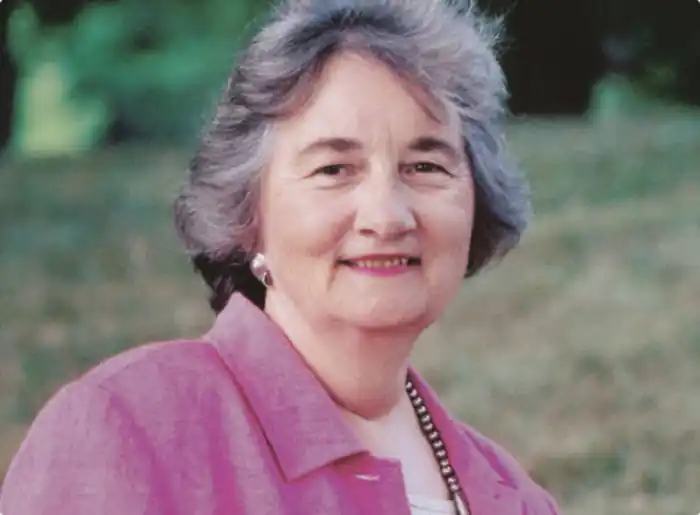
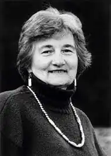
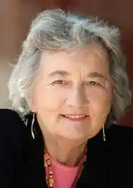

Кетрін Патерсон (англ. Katherine Paterson, уроджена Вомелдорф; нар. 31 жовтня 1932, Кіньянь (сучасний Хуай'ань), Китай) — американська письменниця, авторка дитячих та фентезійних творів, лауреатка цілого ряду премій, зокрема, меморіальної премії Астрід Ліндгрен (2006) та премії Г. К. Андерсена (1998).
Народилася 1932 року в Кіньяні (китайська провінція Цзянсу) в родині місіонера Американської пресвітеріанської церкви. Батько працював директором школи для хлопчиків і сприяв укріпленню церковних громад серед місцевого населення. З початком китайсько-японської війни у 1937 році родина змушена шукати притулку в США, а пізніше в Шанхаї. Батько залишається в Китаї. На час, коли Кетрін виповнилося 18 років, родина змінила місце проживання 15 разів.
Закінчила середню школу в штаті Вірджинія (США) і вступила до Королівського коледжу в Бристолі. Одночасно викладала в шостих класах сільської школи в Вірджинії. Продовжила освіту в Пресвітеріанській школі християнської освіти в Річмонді, де займалася підготовкою жінок до викладацької і місіонерської роботи. Працювала місіонеркою на острові Сікоку (Японія), вивчила японську мову. В США повертається через чотири роки. В 1962 році отримує ступінь магістра релігійної освіти в нью-йоркській Об'єднаній богословській семінарії. Одружується з пастором Джоном Патерсоном із Буфало. Має двох власних і двох прийомних дітей дітей — Джона, Давида, Елізабет По Лін (Гонконг) та Мері Кетрін Нахесапечеа (родом із племені апачі-кіован). Живе в Бері (Вермонт).